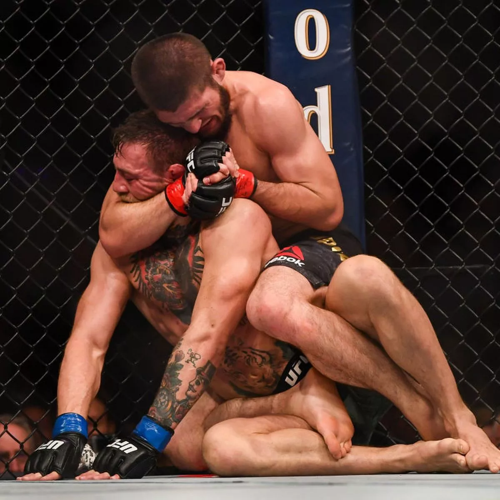
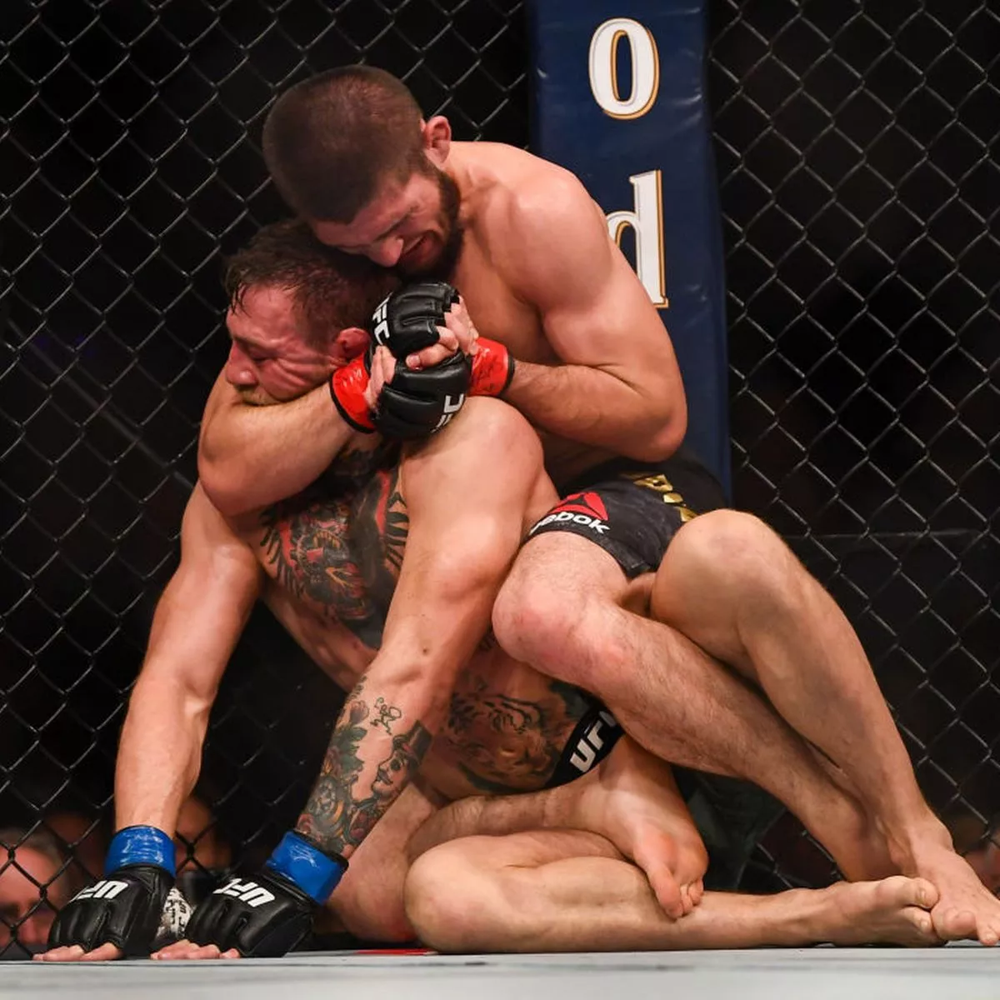

Bir çoğumuzun zamanında Undisputed(Yenilmez) film serisiyle beraber dövüş sporlarına ilgisi artmıştır.Bu ilgiyi devam ettirebilecek organizasyonlardan en büyüğü şüphesiz UFC.Bugün sizlerle birlikte bu organizasyonda düzenlenen en keyifli 3 maç hakkında konuşacağız.
Not:Bu sıralama tamamen kişisel beğeniler üzerine düzenlenmiştir.Siz de fikirlerinizi, listede kesinlikle olması gerektiğini düşündüğünüz maçları yorumlar kısmında(eklenirse) belirtmeyi unutmayın. Keyifli okumalar dilerim!
Biraz eskilere gidelim.Bu maç yaşlı kurt Aldo'nun, yükseliş döneminde olan Conor'la yaptığı büyük bir hüsranla sonuçlanan o maç.Basın toplantısından maçın olacağı zamana kadar Aldo'nun üstünde psikolojik baskı kuran Conor adeta maçı başlamadan bitiriyor.
13 saniye süren bu maçta mma sevenler bir devrin çöküşüne tanıklık ediyor.İlk maçını 2004 yılında yapan Aldo büyük başarılarla kariyerine devam ettirse de son yıllarında aldığı malubiyetlere rağmen skorunu 31-8-0 yaparak emekliye ayrıldı.
Bu yaşlı kurdun hayatını izlemek isterseniz stronger than the world adlı netflix yapımı filme şans verebilirsiniz.
İşte Conor'un bu maç hakkındaki sözleri...
Maçı izlemek için tıklayınız. 

Eğer UFC dünyaca bilinen bir organizasyonsa şüphesiz bu maçın etkisi çok büyük.İkili arasındaki dostlukla başlayan ancak düşmanlıkla devam eden bu hikaye izleyenlerin dikkatini epeyce çekiyor.
Conor'un psikolojik baskısı bu sefer Dağıstanın dağlarından gelen Khabibte işe yaramıyor.Yani Conor çarpabileceği en sert kayaya çarpıyor desek yeridir.Kariyerini 29-0-0 skorla yenilgisiz bitiren bu sert kaya maçı domine ederek rahat bir galibiyet alıyor.
Farkettiyseniz eklediğim 3 maçta da Conor var.Dövüşçülüğü konusunda tartışmalara konu olsa bile reklam, pazarlama ve maçı satma konusunda Conor'dan iyi olan yok.Maç gelirleri de bunu kanıtlar nitelikte zaten.
Tam bir yumruk şöleni olan bu maçta bolca kan ter ve cesaret bulunmakta.Tarzı sebebiyle Nate bolca yumruk yiyip yumruk atan bir dövüşçü bundan ötürü neredeyse her dövüşte kaşı, yüzü bir şekilde açılıyor.Bu da seyir zevki açısından izleyenleri tatmin eder nitelikte.
Bu yüzden maç hakkında denebilecek pek bir şey yok izlemek isterseniz fotoğrafa tıklayabilirsiniz.Biz susalım yumruklar konuşşsun diyip bütün mma severlere keyifli günler diliyoruz.